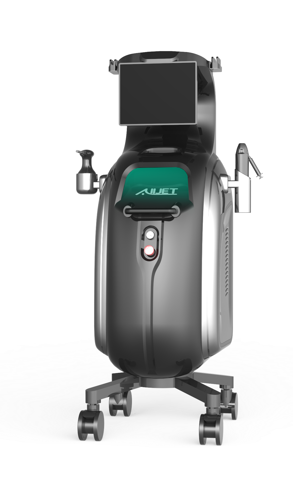
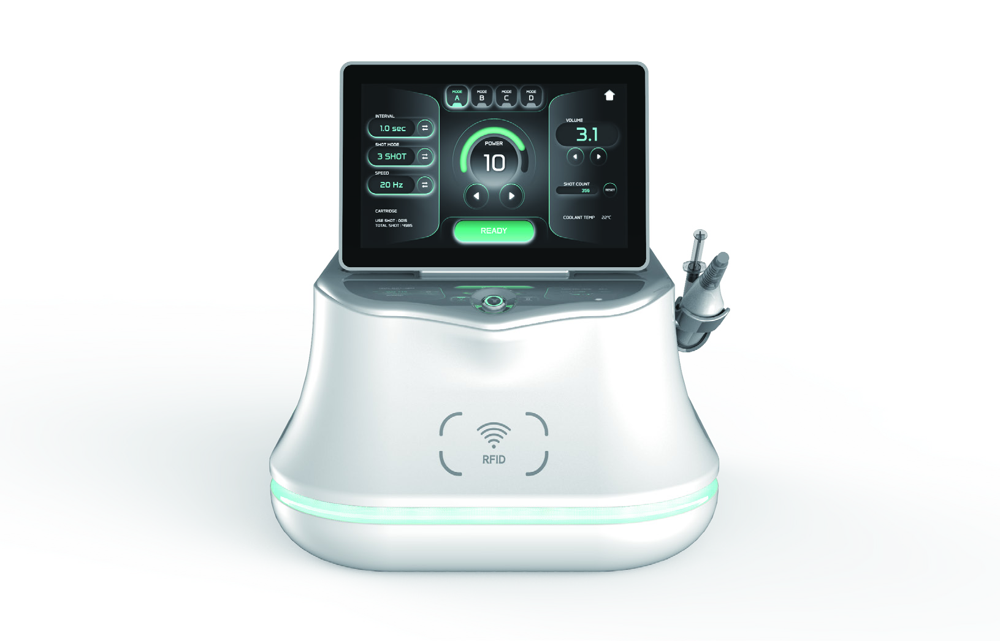

의료기기 Medical
All-Jet

이픈의 무바늘 정밀 분사 기술을 의료 환경에 맞춰 구현한 의료기기입니다. 40.68 MHz 고주파 기능을 함께 담았습니다.
All-Jet 자세히 보기 ↗ABOUT IPEUN
이픈은 바늘 없는 정밀 분사 기술을 연구하고,
의료기기와 미용기기로 연결합니다.
하나의 기술을 바탕으로, 서로 다른 피부케어 환경을 위한 제품을 만듭니다. 의료기기 All-Jet과 미용기기 INVERA는 이픈의 공통 무바늘 기술에서 출발했습니다.
기술의 정밀함과 실제 사용 경험을 함께 고려하며, 제품 설계와 개발을 통해 피부케어의 새로운 가능성을 넓혀갑니다.
이픈의 기술 알아보기 ↗OUR PRODUCTS
하나의 무바늘 정밀 분사 기술을 의료기기와 미용기기로 만납니다.
의료기기 Medical

이픈의 무바늘 정밀 분사 기술을 의료 환경에 맞춰 구현한 의료기기입니다. 40.68 MHz 고주파 기능을 함께 담았습니다.
All-Jet 자세히 보기 ↗미용기기 Aesthetic

올젯과 같은 무바늘 정밀 분사 기술을 바탕으로 만든 미용기기입니다. 피부케어를 위한 새로운 가능성을 제안합니다.
INVERA 알아보기 ↗